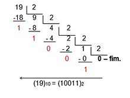
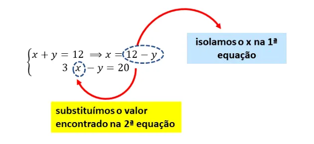

Home |
Introdução |
Facilidades |
Dificuldades |
Avaliação |
|---|
Conteúdos em que tive dificuldade de aprender e compreender:
Sobre divisões sucessivas, tive algumas dificuldades pra entender, utilizamos quando transformamos algum número da Base 10 para Base 2,8,16 etc.
Vamos utilizar como exemplo a Base 10 para Base 2: Dividimos o número decimal por 2, e seu resultudo será dividido por 2 novamente, assim sucessivamente até não conseguirmos mais dividir. O ultimo resultado, juntamente com o resto das operações anteriores formarão o número de Base 2 procurado, seguindo da direita para a esquerda.
Segue o exemplo:
A Função afim é representada como f(x) = ax + b, sendo a e b números reais. Neste tipo de função, o número a é chamado de coeficiente de x e representa a taxa de crescimento ou taxa de variação da função. Já o número b é chamado de termo constante.
Para você resolver a função afim, você atribui um valor ao A e substitui no modelo para encontrar o valor de B.
Segue o exemplo:
